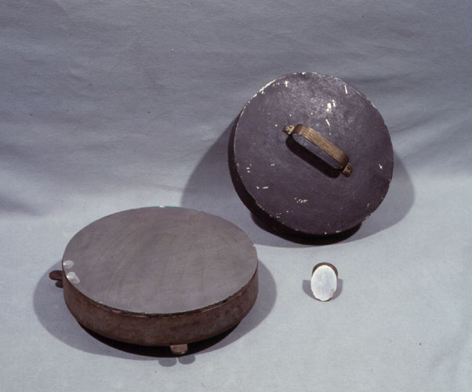

Horn D'Arturo Room

It is the large daily work table of Horn d’Arturo, (Trieste 1879 - Bologna 1967) professor of Astronomy and Director of the Bolognese Observatory from 1921 to 1954, with a period of suspension from 1938 to 1946 due to racial discrimination. At the outbreak of the First World War he enlisted as a volunteer in the Italian army, where he ended up with the rank of Captain of Artillery. It was on this occasion that, to escape Austrian reprisals, he replaced his surname with that of "d 'Arturo", from the name of his father. At the end of the conflict he was officially allowed to keep his double surname, so that he began to sign himself with the name of Guido Horn d 'Arturo.
Munich, ca. 1858
Carl August von Steinheil (Rapportsweiler 1801 - Munich 1870)
walnut, brass and iron
focal length 260 cm, lens diameter 16 cm
length of the tube 256 cm, diameter from 9 to 12 cm
The telescope was purchased in 1858 by the then director, Lorenzo Respighi, to complete the instrumental equipment of the Specola, which already had the meridian circle of Ertel & Sohn (exhibited in the Sala della Torretta). The objective - of excellent quality and one of the largest in Italy at the time - consists of an achromatic doublet with a diameter of 16.2 cm and a focal length of 298 cm. The instrument was placed in a small conical dome, on the south side of the penultimate floor of the tower, removed in the 1960s to make room for the lift cabin. The instrument was used in India in the expedition organized by Pietro Tacchini to observe the passage of Venus on the solar disk in 1874. On that occasion, a field mount was made by the mechanic of the Astronomical Observatory of Padua, for both this telescope, than for the others used by the shipment. Of the original instrument, only the tube, the objective and some eyepieces remained. The restoration was carried out in 2002-04 by the Association for the Restoration of Ancient Scientific Instruments of Milan, which also rebuilt the field mount used in India, as there was no longer any trace of the original mount, which must have been similar to the one. of the Bamberg telescope (pictured in image 6). Physicist and manufacturer of scientific instruments, known above all for the aplanatic three-lens optical system, in 1855 Carl Steinheil founded a company in Munich with his sons which later took the name 'C.A. Steinheil Söhne '. Lorenzo Respighi, a pioneer of astrophysical studies, was director of the Specola from 1853, a position from which he resigned in 1864 for not wanting to take an oath to the new Kingdom of Italy. He was then director of the Campidoglio Observatory in Rome until his death.
Karl Zeiss, Jena, 1932-33
Diameter 60 cm
Focal length 210 cm, F / 3.5
The 60 cm Zeiss reflecting telescope was purchased by Guido Horn d'Arturo thanks to a large donation of three hundred thousand lire from Adolfo Merlani's widow, Bianca Montanari, carried out in 1925. Merlani had been assistant to the chair of Mathematical Analysis and, as a passionate amateur astronomer, he had been appointed honorary assistant of the Observatory. In July 1933 the instrument - made in the Zeiss workshops in Jena - arrived in Bologna enclosed in nine cases with a total weight of 60 quintals. On November 15, 1936, the new observation station was inaugurated on Mount Orzale, at 800m a.s.l. near the town of Loiano, about 40 km from Bologna. The instrument was the second largest in Italy. Due to its excellent optical qualities and the astronomical quality of the site where it was located, an entire generation of astronomers was formed there. Until the 1960s, its use was essential photographic body. The exposed mirror was used until a few years ago, replaced by a more modern one that allows the use of the 60 cm telescope still today in Loiano, near the dome of the largest and most modern 152 cm telescope, built in 1975 by French company REOSC.
Guido Horn d’Arturo, Bologna, 1932
Overall diameter 1 m, focal lenght 10 m, F/10
The "dowel telescope" was conceived by Guido Horn d’Arturo in 1932 and perfected in over twenty years of studies and experiences, conducted without specific funding and without the help of current technology. The mirrors of the first models were composed of 10 small trapezoidal blocks of spherical curvature, produced by Filotecnica-Salmoiraghi, to which 10 were added by Zeiss, in 1936, and in '46 another 60, made by the mechanic of the Specola. Under each piece, three screws allowed it to be adjusted, so that each piece concentrated the light of celestial objects in the same focal plane, where the observation took place photographically. The original mirrors of the prototype have been partially recovered and "re-illuminated". The telescope was located on the upper floor of the tower (the current Tower Room) and could only operate by observing the sky at its zenith, through a pre-existing opening on the terrace. In 1952, Horn arrived at the definitive 1.8 m diameter instrument, obtained with 61 hexagonal plugs.
Bologna, 1935-1952
Guido Horn-d'Arturo (Trieste 1879 - Bologna 1967)
61 hexagonal mirrors in aluminized glass
diameter of the circle inscribed in the hexagon 19.8 cm
focal length 1041 cm, total diameter 180 cm
The difficulty of constructing large mirrors essentially consists in the fact that the thickness of the mirror must be proportionate to the diameter. In fact, if the disc is too thin, the glass flexes and does not retain the shape given to it by the smoothing. This was an insuperable obstacle in the years in which the tile mirror was conceived, while the current technology allows the creation of monolithic mirrors of over 4 meters in diameter. Hence the idea of Horn-d'Arturo - director of the Bologna University Astronomical Observatory from 1920 to 1954, with brief interruptions - to build a mirror composed of small hexagonal mirrors with the foci converging in the same focal plane, in order to obtain an integral stellar image by adding the contributions of each mirror. The resolving power of a small hexagonal mirror is less than that of a single mirror with a diameter equal to the total width of the composite mirror, but it is also true that in astronomical photography, as well as in photoelectric photometry and spectroscopy, what determines the goodness of the he observation is not the diameter of the mirror but the "seeing" image, ie the size of a stellar image altered by atmospheric turbulence.
The mirror is made up of 61 hexagonal tiles, with a total diameter of 180 cm and constitutes the objective of the zenith telescope located on the first floor of the Specola tower; it lay horizontally 50 cm from the floor and received light from a circular opening, made in the floor of the terrace located on the penultimate floor, under the dome where the meridian circle of Ertel & Sohn was located [file 22]. To obviate the immobility of the mirror, a mobile plate holder was used, able to follow the path of a star during the zenith passage. When the seeing was good, with poses of just under seven minutes the eighteenth magnitude was reached, using the photographic materials of the time, generally ultra-sensitive Cappelli plates, produced by the Ferrania company in 9x12 and 9x24 cm sizes. The construction of the instrument took place slowly and in successive stages. From the 10 small trapezoidal blocks of 1935, supplied by Filotecnica Salmoiraghi and having a reflective surface of just over 10 square decimeters, we moved on to 19 hexagonal blocks, worked by the Specola technician Aldo Galazzi, with a reflecting surface of about 4 square decimetres. This prototype, which was mounted in 1950 in the center of the present "Tower Room", using the zenith opening already existing in the vault for observation, had an approximately circular area of one meter in diameter. Finally, in 1952 the instrument was completed with 61 pieces.
The dowels have a smooth surface with spherical curvature, with a radius - the same for all - equal to 20.82 m and a focal distance of 10.41 m and are placed on a marble slab that acts indirectly as a support and is perforated in the points where pass the three screw pegs, on which each dowel rests. The screw holder device, equipped with slides for lateral displacements, is integral with the marm and, acting from the small room below the mirror, you can determine at will any small displacement of the pegs and with them of the dowels, both laterally and vertically. The opening was closed in the 1980s and in the same years the marble top that held the prototype of the instrument was destroyed. At the end of the 1980s all the mirrors were recovered, re-illuminated, mounted in their old seat and covered with a glass top. The more than ten thousand plates, obtained with this telescope, were packed in special crates and placed in the compartment, underneath the mirror, which was used to adjust the mirrors.

Modena, 1813
Giovanni Grisostomo Gualtieri (a.1813)
wood, iron
lenght 430 cm, diametro 48,5 cm
Focal lenght 418 cm, primary mirror diameter 26 cm
"Herschelian telescope built in Modena by Gio. Grisostomo Gualtieri of the year 1813, composed of a painted wooden tube 11 feet long (418 cm), at the bottom of which, by a special iron mount [Inv. MdS-137], a metallic mirror 8 inches (26 cm) in diameter is supported [Inv. MdS-46] The armature of this telescope, apart from the larger dimensions, is quite similar to the previous one.
This Telescope is equipped with two small mirrors with their brass covers. The large mirror is protected by a painted iron band cover. Bronze inclined secondary mirror.
This telescope needs the same occulars of Amici's other and so can those of the Parallactic [refers to Dollond's 3-foot parallactic] to the eyepiece holder. "
The similar but smaller "previous armor" referred to in the 1843 inventory is that of Amici's 17 cm diameter telescope.

Munich, c. 1840
Traugott Lebrecht Ertel (Freiburg 1778 - Munich 1858)
Georg Ertel (Munich 1813-1863)
Brass
Divided circle diameter 35 cm
Vertical circle diameter 15 cm
Telescope length 42 cm
The repeater theodolite is an instrument that is essentially used for geodetic measurements. Different as an invoice from the multiplier circle, it is however conceptually very similar, both using the method of repetition (or multiplication) of the angles. It is of the single telescope type. The level [Inv. MdS-88], which serves to verify the horizontality of the instrument. The telescope is still equipped with optics and cover. The inner circle carries the verniers for measurement, which takes place using two microscopes supported by a rotating arm, while on the outer one there is the graduated silver flap, and the inscription Ertel & Sohn in München can be read. For information on Traugott and George Ertel, see sheet 22 relating to the Meridian Circle and, for further information, the works of Repsold and Bennett.

France?, 19th century ?
Unknown author
Brass and wood
Radius 27 cm
The repeater theodolite is an instrument that is essentially used for geodetic measurements. Different as an invoice from the multiplier circle, it is however conceptually very similar, both using the method of repetition (or multiplication) of the angles. It is of the single telescope type. The level [Inv. MdS-88], which serves to verify the horizontality of the instrument. The telescope is still equipped with optics and cover. The inner circle carries the verniers for measurement, which takes place using two microscopes supported by a rotating arm, while on the outer one there is the graduated silver flap, and the inscription Ertel & Sohn in München can be read. For information on Traugott and George Ertel, see sheet 22 relating to the Meridian Circle and, for further information, the works of Repsold and Bennett.
Congratulations, You have visited the whole Horn d'Arturo Room!
Visit the next room now: Meridiana Room
Or consult the index you find on the left to choose the next room among those available.